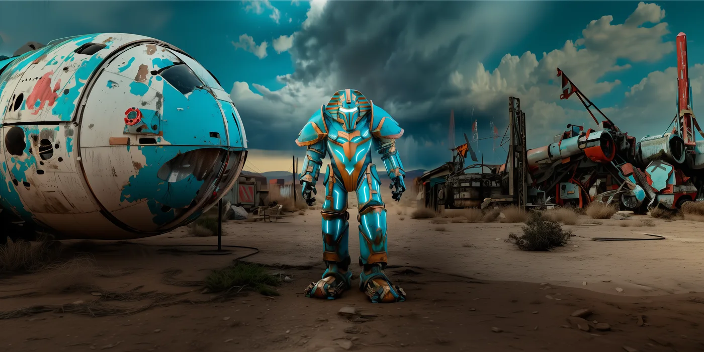
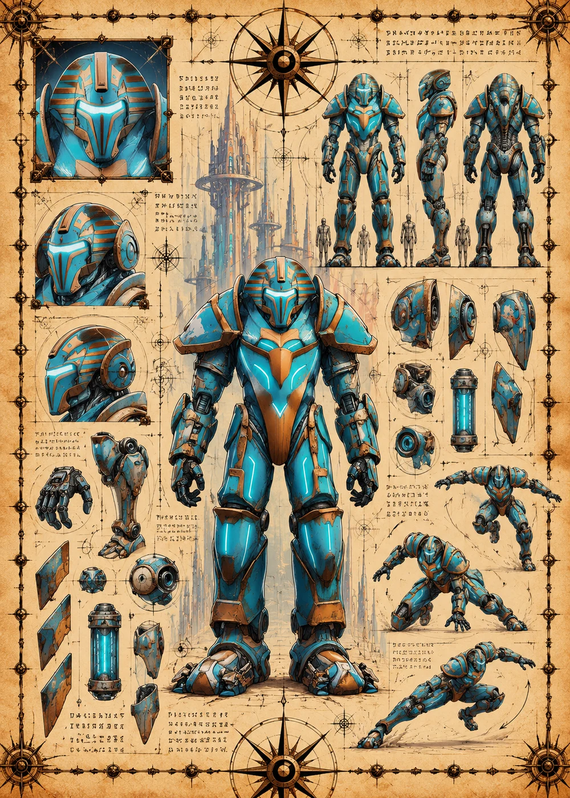

©
©
GENEZYS ARCHIVE · Earth 1 · Legionnaire
Ulinx
Landslide Flinger

Archive record
Ulinx learned long ago that the best weapon is the one the enemy brings. The Chaos Twist copies a Synthbot's own special and turns it back on them. The Custodians call it borrowing. Ulinx never returns anything.
Combat signature
Chaos Twist
120 Cosmara
380 Animus
290 Vitalis
Collapses probability into destructive spiral: Copies 1 enemy's special and deals 140 damage to all enemies if the special doesn't do damage.
Genezys 07:08 ™&©2026LEGIONS
